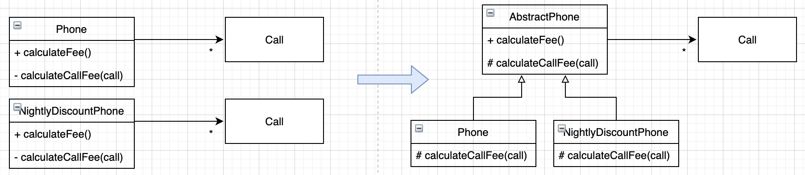
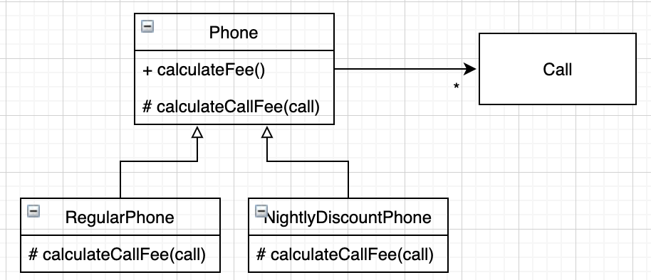

“OBJECTS 10장”
상속과 중복 코드
DRY 원칙
: 모든 지식은 시스템 내에서 단일하고, 애매하지 않고, 정말로 믿을 만한 표현 양식을 가져야 한다.
- 중복코드는 변경을 방해
- 중복 여부를 결정하는 기준은 코드가 변경에 반응하는 방식
- DRY 원칙
- Don’t Repeat Yourself
- Once and Only Once(한번, 단 한번) 원칙
- 단일 지점 제어(Single-Point Control) 원칙
중복과 변경
많은 코드 더미 속에서 어떤 코드가 중복인지를 파악하는 일은 어려움
중복 코드는 항상 함께 수정돼야 함
기회가 생길 때마다 코드를 DRY 만들기 위해 노력하라.
타입 코드 사용하기
1 | for(Call call : calls) { |
- 타입 코드를 사용하는 클래스는 낮은 응집도와 높은 결합도 문제 발생
- 타입 코드를 사용하지 않고 중복 코드를 관리할 수 있는 효과적인 방법 :
상속
상속을 이용해 중복 코드 제거하기
이미 존재하는 클래스와 유사한 클래스가 필요하다면 코드를 복사하지 말고 상속을 이용해 코드를 재사용해라.
- 단점
- 상위 클래스를 개발한 개발자의 가정을 이해하기 전에는 상속을 구현하기 힘듬
- 요구사항과 구현 사이의 차이가 크면 클수록 이해하기 어려움
상속은 결합도를 높인다.
취약한 기반 클래스 문제
: Fragile Base Class Problem, Brittle Base Class Problem
: 부모 클래스의 변경에 의해 자식 클래스가 영향을 받는 현상
- 상속은 기능을 확장에 용이하지만 높은 결합도로 인해 부모클래스를 점진적으로 개선하는 것을 어렵게 만듬
- 캡슐화를 약화, 결합도 Up
- 퍼블릭 인터페이스에 대한 고려 없이 단순 코드 재사용을 위한 상속은 매우 위험
메서드 오버라이딩의 오작용 문제
- 상속은 코드 재사용을 위해 캡슐화를 희생함
완벽한 캡슐화를 원한다면 코드 재사용을 포기하거나, 상속 이외의 다른 방법을 사용해야 한다.
부모 클래스와 자식 클래스의 동시 수정 문제
- 부모 클래스를 수정할때 자식 클래스는 함께 수정되어야 함
- 상속을 이용하면 자식 클래스가 부모 클래스의 구현에 강하게 결합
상속을 위한 경고
- 첫번째
- 자식 클래스의 메서드 안에서 super 참조를 이용해 부모 클래스의 메서드를 직접 호출할 경우 두 클래스는 강하게 결합
- super 호출을 제거하여 결합도를 제거하라.
- 두번째
- 상속 받은 부모 클래스의 메서드가 자식 클래스의 내부 구조에 대한 규칙을 깨트릴수 있음.
- 세번째
- 자식 클래스가 부모 클래스의 메서드를 오버라이딩 할 경우 부모 클래스의 메서드에 자식 클래스가 결합.
- 네번째
- 클래스를 상속하면 결합도로 인해 자식 클래스와 부모 클래스를 동시에 변경해야 함.
Phone 다시 살펴보기
상속으로 인한 피해를 최소화할 수 있는 방법 > 추상화
추상화에 의존하자
- 자식클래스와 부모 클래스 모두 추상화에 의존
차이를 메서드로 추출하라 & 중복 코드를 부모 클래스로 올려라

추상화가 핵심이다
차이점을 메서드로 추출하고 공통적인 부분은 부모 클래스로 이동하라.
의도를 드러내는 이름 선택하기

세금 추가하기
- 클래스 사이의 상속은 자식 클래스가 부모 클래스가 구현한 행동에 결합
- 또한 인스턴스 변수에 대해서도 결합되게 만듬
- 인스턴스 초기화로직을 변경 하는 것이 코드의 중복보다 현명한 선택
- 객체 생성 로직에 대한 변경을 막기보다 핵심 로직의 중복을 막아야 함
차이에 의한 프로그래밍
: 기존 코드와 다른 부분만을 추가함으로써 애플리케이션의 기능을 확장하는 방법
정말로 필요한 경우에만 상속을 사용하라.
- 상속의 단점은 피하면서도 코드를 재사용 할 수 있는 더좋은 방법 :
합성